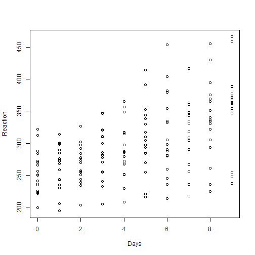

Data are from the study described in Belenky et al. (2003), for the sleep-deprived group and for the first 10 days of the study, up to the recovery period. Data contains the average reaction time per day for subjects in a sleep deprivation study. The observations represent the average reaction time on a series of tests given each day to each subject.
